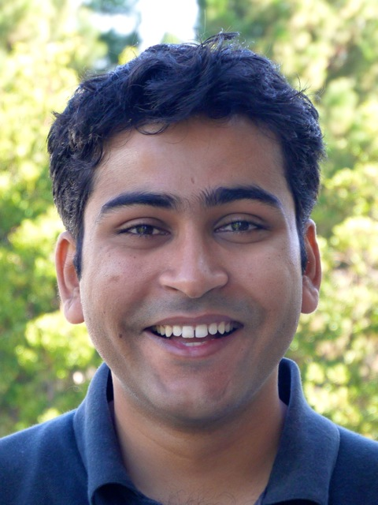

vipandey@ucsd.edu
 @vineet1pandey
@vineet1pandey
Hola, I'm Vineet Pandey.
I'm on the job market.
As a Human-Computer Interaction researcher, I design, build, and evaluate socio-technical systems that enable people to perform complex, creative work personally-meaningful to them  .
.
I am a Ph.D. Candidate in Computer Science, advised by Scott Klemmer at UC San Diego Design Lab.
My research uses scientific work (especially human microbiome research) as a petri-dish to create scalable techniques for integrating learning and working. My research platform Gut Instinct has been used by over 600 people from 29 countries to create novel hypotheses, design experiments, and replicate known results. My research systems have been deployed with the American Gut Project (world's largest crowdfunded citizen science project), Open Humans, and many other communities. I have published at leading HCI and Learning conferences.
I want to enable people around the world to live more meaningful and fun lives by solving their own problems. Building online systems by integrating learning, community, and technology gets me closer to this goal. And it's fun!
Travel/Talks
Main Projects
Docent: Collaboratively creating hypotheses

{kind=link}
Galileo: Collaboratively designing+running experiments
Social computing system with procedural training enables novices to design and run novel, structurally-sound experiments
{kind=link}
Other Projects and Publications
Framing Feedback: High-Quality Peer Assessment
Framing task goals significantly changes reviews, by adding a numeric scale, chunking the task into short stages, and showing draft along with final work.
Paper Slides Poster News
{kind=link}
Collaborators: Catherine M. Hicks (Project Lead), C. Ailie Fraser
Concerto: A High Concurrency Key-Value Store with Integrity
Deferred verification preserves the utility of online verification and improves concurrency resulting in orders-of-magnitude performance improvement.
Paper: SIGMOD 2017 Talk: SIGMOD 2017 News: CSE UCSD
Collaborators: Arvind Arasu, Ken Eguro, Raghav Kaushik, Donald Kossmann, Pingfan Meng, Ravi Ramamurthy
Talkabout+: Storytelling for learning

Pilot results from a Coursera class, suggest that participants prefer to exchange information with their peers using personal stories and connecting stories with curriculum increases participant engagement
Paper: LatS 2015 EA News: Jacobs School of Engineering Poster
{kind=link}
Collaborators: Yasmine Kotturi, Chinmay Kulkarni, Michael Bernstein, Scott Klemmer
Darwin: Evolutionary Game theory for peer feedback

edit and fix: we explore the design space of a peer feedback system by modeling it using game theory. Our simulations show that incentivizing students to provide feedback requires the value obtained from receiving a feedback to exceed the cost of providing it by a large factor (greater than 7). Furthermore, hiding feedback from low-effort students incentivizes them to provide more feedback.
Paper: CSCW 2016 EA News: Jacobs School of Engineering Poster Code
Collaborators: Yasmine Kotturi, Chinmay Kulkarni, Michael Bernstein, Scott Klemmer
Galileo: Scaling Citizen-led Experimentation with a Procedural Training Platform
In Submission
Vineet Pandey, Tushar Koul, Chen Yang, Daniel McDonald, Rob Knight, Scott Klemmer
Docent: Transforming personal intuitions to scientific hypotheses through content learning and process training
Learning at Scale 2018
Vineet Pandey, A. Amir, J. Debelius, Embriette Hyde, Tomasz Kosciolek, Rob Knight, Scott Klemmer
Gut Instinct: Creating Scientific Theories with Online Learners
CHI 2017
Vineet Pandey, A. Amir, J. Debelius, Embriette Hyde, Tomasz Kosciolek, Rob Knight, Scott Klemmer
Concerto: A High Concurrency Key-Value Store with Integrity
SIGMOD 2017
Arvind Arasu, Ken Eguro, Raghav Kaushik, Donald Kossmann, Pingfan Meng, Vineet Pandey, Ravi Ramamurthy
Framing Feedback: Choosing Review Environment Features that Support High Quality Peer Assessment
CHI 2016
Catherine M. Hicks, Vineet Pandey, C. Ailie Fraser, Scott Klemmer
An HCI View of Configuration Problems
arXiv 2016
Tianyin Xu, Vineet Pandey, Scott Klemmer
Integer Representations towards Efficient Counting in the Bit Probe Model
Journal of Discrete Algorithms 2014, TAMC 11
Gerth S. Brodal, Mark Greve, Vineet Pandey, S. Srinivasa Rao
Extended Abstracts
(Upcoming) Citizen Microbiology: Moving beyond crowdsourcing to active, participatory science by the public
American Society of Microbiology 2019
Vineet Pandey, Daniel McDonald, Scott Klemmer, Rob Knight
Education across borders: Technology supported mentoring and teambuilding HCI Across Borders, CHI 2016
Vineet Pandey
Gut Instinct: Creating Scientific Theories with Online Communities CSCW Doctoral Consortium 2018
Vineet Pandey
Transitioning the American Gut Project to the Microsetta Initiative American Society of Microbiology 2018
D. McDonald, A. Aksenov, A. Melnik, P. Dorrestein, L. Smarr, R. Sinha, V. Pandey, S. Klemmer, R. Knight
Integrating Citizen Science with Online Learning to Ask Better Questions HCOMP 2016
V. Pandey, S. Klemmer, Amnon Amir, Justine Debelius, E. Hyde, Tomasz Kosciolek, R. Knight
Game-theoretic models identify useful principles for peer collaboration in online learning platforms CSCW 2016
Vineet Pandey, Krishnendu Chatterjee
Connecting stories and pedagogy increases participant engagement in discussions Learning at Scale 2015
Vineet Pandey, Yasmine Kotturi, Chinmay Kulkarni, Michael Bernstein, Scott Klemmer
Learning@Scale 2015
Poster
This website is heavily inspired from Arvind Satyanarayan's webpage